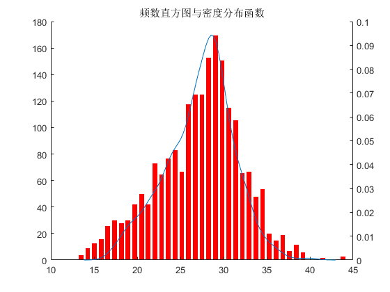
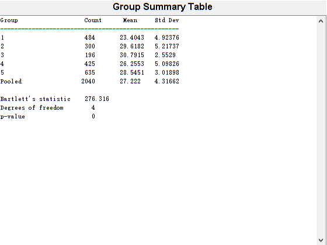
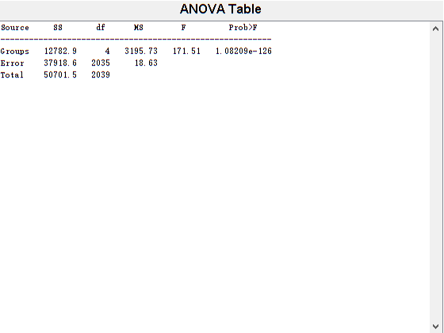
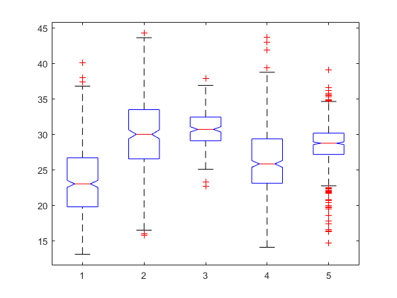
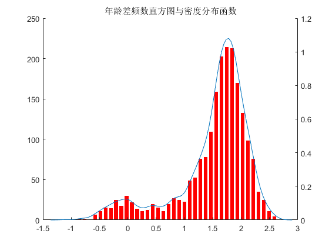
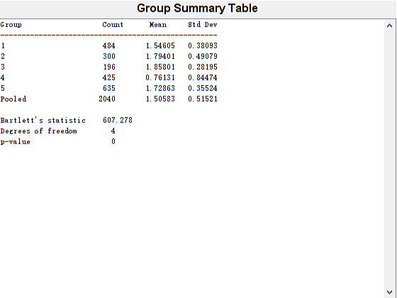
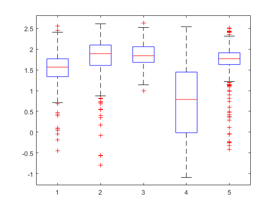
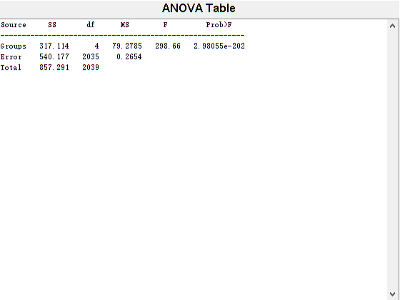
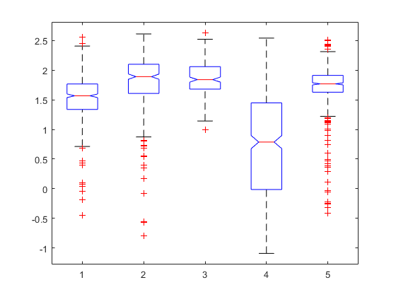

Contents
close all;
clear all;
clc;
[NUM,TXT,RAW]=xlsread('data.xlsx');
Category=NUM(:,2);
AGE=NUM(:,7);
画出密度分布并进行正态检验
m=40;
[a,b]=hist(AGE,m);
bar(b,a,'FaceColor','r','EdgeColor','w');box off
hold on
[f,x] = ksdensity(AGE);
a2=axes;
plot(x,f)
set(a2,'box','off','yaxislocation','right','color','none','xtick',[])
title( '频数直方图与密度分布函数');
alpha=0.05;
[mu,sigma]=normfit(AGE);
p1=normcdf(AGE,mu,sigma);
[H1,s1]=kstest(AGE,[AGE,p1],alpha);

分别对各组进行正态检验
alpha=0.05;
for i=1:5
idx=find(Category==i);
testdata=AGE(idx);
[mu,sigma]=normfit(testdata);
p1=normcdf(testdata,mu,sigma);
[H1,s1]=kstest(testdata,[testdata,p1],alpha);
if(H1==1)
disp(['第',num2str(i),'类拒绝正态分布假设;']);
else
disp(['第',num2str(i),'类不拒绝正态分布假设;']);
end
end
p = vartestn(AGE,Category)
if(p<alpha)
disp(['不满足方差齐性']);
end
p=anova1(AGE,Category)
if(p<alpha)
disp(['拒绝H0假设']);
end
第1类不拒绝正态分布假设;
第2类不拒绝正态分布假设;
第3类不拒绝正态分布假设;
第4类拒绝正态分布假设;
第5类拒绝正态分布假设;
p =
1.3878e-58
不满足方差齐性
p =
1.0821e-126
拒绝H0假设
  
重新选择三列数据进行分析
RD=NUM(:,5);
SR=NUM(:,9);
VA=NUM(:,8);
data=log(VA);
m=40;
[a,b]=hist(data,m);
bar(b,a,'FaceColor','r','EdgeColor','w');box off
hold on
[f,x] = ksdensity(data);
a2=axes;
plot(x,f)
set(a2,'box','off','yaxislocation','right','color','none','xtick',[])
title( '年龄差频数直方图与密度分布函数');
AGE=data;
alpha=0.05;
for i=1:5
idx=find(Category==i);
testdata=AGE(idx);
[mu,sigma]=normfit(testdata);
p1=normcdf(testdata,mu,sigma);
[H1,s1]=kstest(testdata,[testdata,p1],alpha);
if(H1==1)
disp(['第',num2str(i),'类拒绝正态分布假设;']);
else
disp(['第',num2str(i),'类不拒绝正态分布假设;']);
end
end
p = vartestn(AGE,Category)
if(p<alpha)
disp(['不满足方差齐性']);
end
p=anova1(AGE,Category)
if(p<alpha)
disp(['拒绝H0假设']);
end
第1类拒绝正态分布假设;
第2类拒绝正态分布假设;
第3类不拒绝正态分布假设;
第4类拒绝正态分布假设;
第5类拒绝正态分布假设;
p =
4.1215e-130
不满足方差齐性
p =
2.9806e-202
拒绝H0假设
    